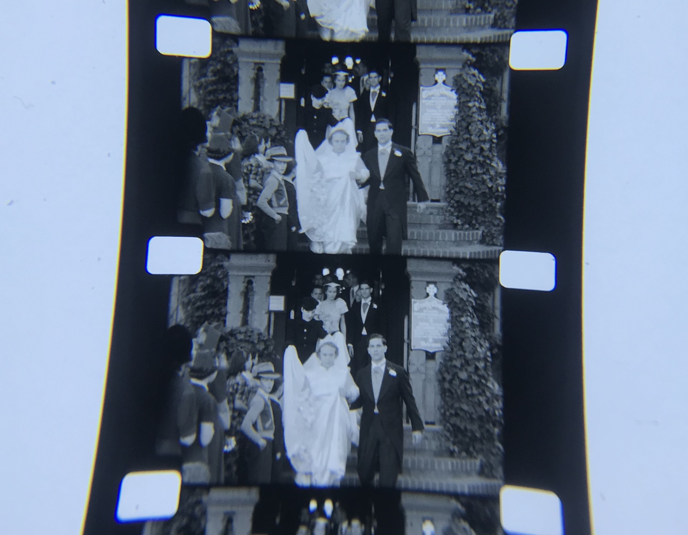

Indeterminable Frames
A digital humanities + film and media studies project re-examining the moving image.
About This Project

Experimental and avant-garde1 filmmaking is often situated in opposition to narrative filmmaking due to the limitations of the latter practice. The products of experimental and avant-garde practices result in various forms of physical or visual representations, whether it be brought about by mechanical, chemical, abstract, or structural methods. While a significant number of artists in this field approach the creation of their works through traditional camera exposure methods, films of this genre may also be created by distinct, unconventional apparatuses, such as through the act of scratching, burning, gluing, and unorthodox printing and laboratory techniques. One of the most notable movements of this work is the American avant-garde as championed by scholar and historian P. Adams Sitney, and it remains one of the most recognizable bodies of cinematic artwork of the post-war era. The earliest works of this tradition were created on celluloid media with many works from this movement digitized in recent decades with the aim of making them accessible in digital formats to reach broader audiences. With the act of digitization comes the complications brought about by rendering physical media into digital translations and a rising body of questions worth exploring within this gap.
The practices honed by cinema’s experimental and avant-garde movement make it a rich site for the analyses conducted within this project. Indeterminable Frames explores a method of re-examining the moving image using the field of digital humanities and its intersection with film and media studies. Similar and notable studies utilizing celluloid media, such as the work conducted by FilmColors, have made clear there are further affective qualities worth investigating within the moving image and intersections of technology, perception, and aesthetics with foundations in the humanities provide approaches worth considering (Flueckiger 2018). This project seeks to engage in conversation with prior research by expanding our understanding of moving image works, providing alternative directions for exploring the visual qualities of what lies within the ubiquitous rectangular frames, and interrogating our understanding of frames and their relationship to temporality.
Related scholarship and projects such as Kevin L. Ferguson's "Volumetric Cinema"(opens in a new tab) claimed we should no longer be bound to cinema as truth existing within the fleeting 24 frames per second. Rather, we should be able to hold and grasp frames as long as we want. Dave Rodriguez's Particles in Space(opens in a new tab) and Colors of Ozu(opens in a new tab) built upon ideas within Ferguson's work and raised additional important and relevant questions, particularly advocating for the avenues opened by advancements in visual processing technology in order to extend beyond traditional notions of access to audiovisual materials (2020). These approaches are foundational, and this project aims to continue the ethos of their work and similar ideas they have brought forward while introducing other considerations and frameworks.
Alternative media theorist Gene Youngblood wrote in his book Expanded Cinema for an expansion of the notion of cinema to develop what he believed would be a new vision and form of consciousness. He claimed aesthetic application of technology would be the only means of achieving new consciousness to match our developing intermedia environment (Youngblood 2020: 189), in what he defined during his time of writing as the dawn of the “Paleocybernetic Age”. Youngblood’s claims and influence in the field of film and media studies inspires this project, particularly the ways his work pose notable questions for taking the great leap of leaving behind traditional ways of knowing in order to accept alternative understandings and realities. By translating films into visual captasets within Indeterminable Frames, we can derive an alternative visualization of a work and different approach to the viewing of cinema. The revisualizations in this project aim to illustrate a different form of film and media analysis, and by doing so, forge avenues for generating a consciousness in the vein of Youngblood’s work. This project seeks not to define these methods of viewing and interacting with film as a new, “absolute truth” for film spectatorship but proposes the methods used as a form that warrants more critical investigation, use, and ongoing discussion.
Background and Foundations
An intersection of moving image works, histories, disciplines, and theoretical works by a range of scholars grounds this project. Indeterminable Frames utilizes five foundations: a critical approach to digitization and its methods, the history of the moving image, the practice of deformance, moving image works as capta, and revisualization through digital means as a continuation of aura.

A Very Brief History of the Moving Image
The art of the moving image rests on the acts of photography as a capture of light and projection as a broader
display of the aforementioned images. Mechanical studies of the moving image stemmed from the concept
of the still-image and started as early as the late 1800s, with experiments in protocinematic devices such as
magic lanterns, zoetropes, flip books, and phenakistiscopes (Kattelle 2000: 4-13). While the devices had
variations in design and technical components, they all contributed to the formation of the persistence of
vision—an optical illusion creating the illusion of motion perceivable by the human eye and cognitive mind.
Centuries-old science in the study of the camera obscura, a precursor to the optics of modern-day cameras,
simultaneously contributed to the idea light could project images for the enjoyment of a broader audience
With ongoing advancements in industrialization and manufacturing, Eastman Kodak was able to make celluloid
film strips first commercially available in 1889. The birth of 16mm film by Eastman Kodak in 1923, a less
expensive alternative more accessible to amateurs and non-commercial filmmakers, changed the consumer
market and professional industry for decades to come. The history of the moving image and its earliest physical
principles becomes foundational for the framework of this project. It is important to distinguish the foundation
of the moving image is itself an accumulation of individual still-images, hereby known as frames, brought
together to depict movement when viewed. See Figure 2 for an example of individual frames in 16mm film.
A Practice of Deformance
Given the aforementioned facts and the physical qualities of film as celluloid-based media, a translation of
a physical celluloid form with a frame-by-frame light projected structure and a specific frames per second
exposure rate as determined by the original filmmaker is translated into a new form by its datafication through
digitization, created into new “frames” via computational tools such as FFmpeg, and then presented here.
However, one must also understand these ways of viewing or the practices conducted within this project do
not have to be reductive processes.
The analysis for this project utilizes the critical practice of deformance as defined by Jerome McGann and
Lisa Samuels to introduce a way of engaging with works and producing results (1999). Deformance is the act
of disrupting or re-organizing a work’s original order to bring to attention possibilities of meaning not seen
otherwise. Rather than interpreting visual derivatives of the work on traditional notions of meaning residing
in thematic forms and relying on the performativity of translation, it re-investigates the terms in which critical
commentary is drawn and undertaken. The paradigm of deformance in this instance becomes the means of
interpreting through the use of computational methods—a method of viewing not priorly associated with the
works discussed in this project. Through the use of the digital tools in this project, we conduct deformance to
embrace a new visual approach and allow an alternative experience to come to fruition.
Moving Image Works as Capta
According to scientific method approaches to inquiry, we can equate the accumulation of derived still-images from these moving image works as our "datasets." However, Johanna Drucker's definition of data as capta provides a more suitable definition for the inquiry conducted within this project. According to Drucker, "humanistic inquiry acknowledges the situated, partial, and constitutive character of knowledge production, the recognition that knowledge is constructed, taken, not simply given as a natural representation of a pre-existing fact." Data is assumed to be a "given"—recorded and observed; capta is "taken" actively—to engage and analyze.
The use of capta per Drucker's definition grounds the use of the moving image work case studies first and foremost as artist-made works used primarily to answer humanities-based questions about film as aesthetic creations. In addition, understanding the information we use as having an active process rather than a passive existence is key to our interpretation of these works within the analysis. It allows the works to keep their visual and historical richness inherent to their existence during the process of inquiry rather than being reduced to static objects for the sake of digital technicality.
Reproductions vs. Revisualizations
The essence of authenticity as processed through the methods of mechanization and digitization has been commonly debated over time (Benjamin 1968; Davis 1995). When discussing technology and art during the process within these purviews, one must consider the relationship between the two and the influences of one process over the other. Mechanization through the use of computer tools and methods, otherwise known as the process of introducing machine-based methods for a generated output, encapsulates the method conducted within the project.
Scholar and critic Walter Benjamin argued in his seminal essay "The Work of Art in the Age of Mechanical Reproduction" that while the act of reproducibility brought copies and replications to new physical places, and thus, increased modes of access—it also presented something new. The aura, the unique aesthetic authority of a work of art crafted through historical testimony and the domain of tradition, could be absent from a mechanically generated copy. In the vein of Benjamin's line of thought, the process of inquiry proposed here does not aim to reproduce the works through the digital means, therefore works in question keep their distinct auras within their presence in time and space. The visual elements included here are what I define as revisualizations, rather than reproductions. Revisualization illustrates there are more visible qualities to understand about these works. When contexualized through the many frameworks introduced, this is where the digital humanities can step in and help fill a gap.
Frames, "Frames," and Still-Images
Frames are the individual frames as we've come to understand them within celluloid media forms, as seen in Figure 2. Through the act of deformance, we generate derivatives for this project. Thus, the derivatives mapped on ImagePlot are "frames" and derivatives are created through FFmpeg are still-images. You can read more about the tools used in Methods.
The word frames itself is used in various contexts, which is why it's important to define the terms and draw boundaries here. The use of the term within the media industry and its related fields can be far different than what many traditional users and consumers may understand it to mean. Notably, born-digital video also uses frames per second standards as units of measurement. However, for the purposes of this project, we'll stick to the definition of frames as it's understood within celluloid mediums.